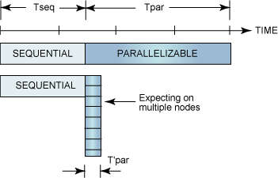
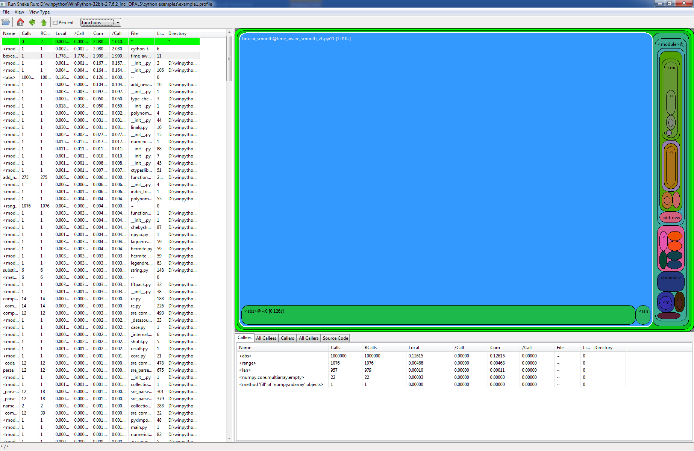

We should forget about small efficiencies, say about 97% of the time: premature optimization is the root of all evil.
– Donald Knuth
The problem with premature optimization is that you never know in advance where the bottlenecks will be.
A parallelized program can only be as fast as the slowest single threaded piece of code.

Figure 1: Illustration of Amdahl's law from IBM
Built in Python profiler can be called from command line or from Python itself.
python -m cProfile -o <output> <script-name> <options>
Viewing profile
python –m pstats <output> runsnake <output>
Runsnakerun requires wxpython – not portable

Figure 2: Runsnake interface
@profile decorator for functions that we want to look atkernprof –l –o <outputfilename> <script-name> <options> python –m line_profiler <outputfilename>
Now that you have found the slow part, what to do?
no!no!no!yes!If those are you answers:
def f(x): return x ** 2 - x def integrate_f(a, b, N): s = 0 dx = (b - a / N) for i in range(N): s += f(a + i * dx) return s * dx
def f(double x): return x ** 2 - x def integrate_f(double a, double b, int N): cdef int i cdef double s, dx s = 0 dx = (b - a / N) for i in range(N): s += f(a + i * dx) return s * dx